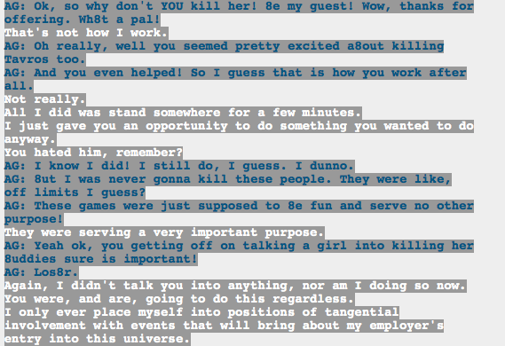
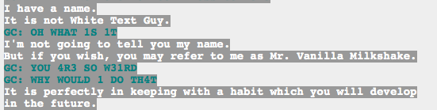
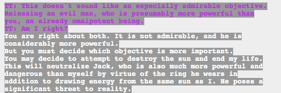

So after the whole Green Sun thing, which is still blowing my mind, I went back to look at what Doc Scratch said, and I have some thoughts:
Like, his claims that he didn’t lie are incredibly suspect. The Tumor might have enough power to destroy the Green Sun, but it wouldn’t have, and couldn’t have, making that statement just a hair shy of a lie. His earlier comments about destroying the Green Sun are even worse. Basically, he lays it out as “attempt to destroy the sun -> his death and Jack’s neutralization.” Now, “attempt” does mean that–
Actually I just figured it out. They attempted to destroy the sun, and that lead to Doc’s death (I guess? it looked like meta!Hussie killed him), and it (more or less) lead to Jade reaching god-tier and fusing with the first guardian, which I figure means she can take out Jack, right?
However! He is a creepy bastard who seriously gaslight Vriska when she was what…10ish? Sure, she was “going to” do that shit anyway, but she’s also had someone whispering in her ear that she should kill people, that she will kill people, that she’s that type of person. No wonder she acted like she’d been abused.
Also I just got that Terezi would call him Mr. Vanilla Milkshake because she would start seeing via scent.